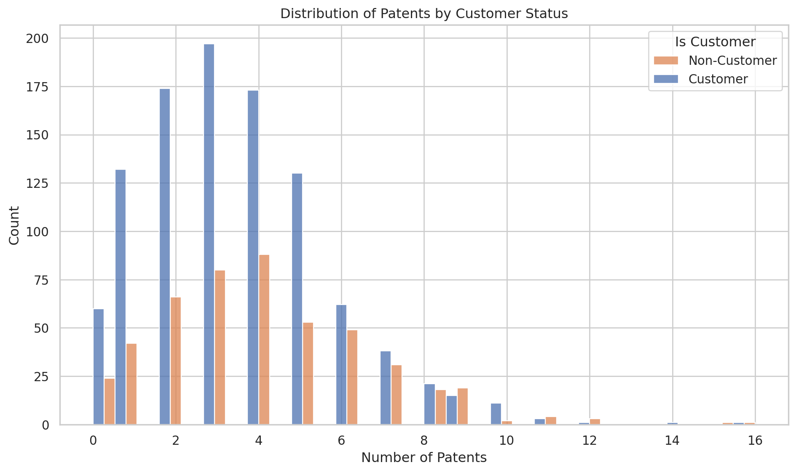

import pandas as pd
blueprinty = pd.read_csv("/home/jovyan/Desktop/mysite/projects/hw2/blueprinty.csv")
blueprinty.info()
blueprinty.describe()
import matplotlib.pyplot as plt
import seaborn as sns
sns.set(style="whitegrid")
plt.figure(figsize=(10, 6))
sns.histplot(data=blueprinty, x="patents", hue="iscustomer", bins=30, kde=False, multiple="dodge")
plt.title("Distribution of Patents by Customer Status")
plt.xlabel("Number of Patents")
plt.ylabel("Count")
plt.legend(title="Is Customer", labels=["Non-Customer", "Customer"])
plt.tight_layout()
plt.show()
blueprinty.groupby("iscustomer")["patents"].mean().round(2)<class 'pandas.core.frame.DataFrame'>
RangeIndex: 1500 entries, 0 to 1499
Data columns (total 4 columns):
# Column Non-Null Count Dtype
--- ------ -------------- -----
0 patents 1500 non-null int64
1 region 1500 non-null object
2 age 1500 non-null float64
3 iscustomer 1500 non-null int64
dtypes: float64(1), int64(2), object(1)
memory usage: 47.0+ KB
iscustomer
0 3.47
1 4.13
Name: patents, dtype: float64